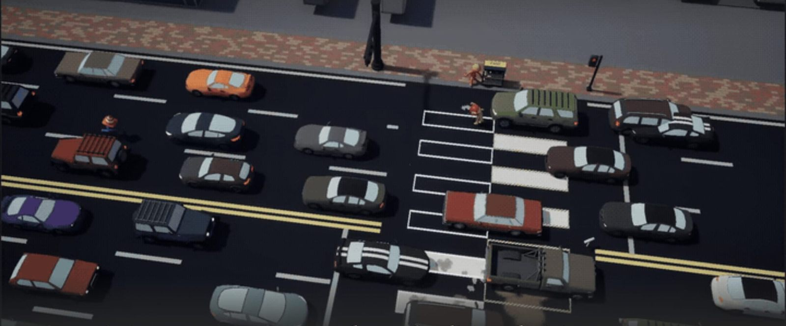
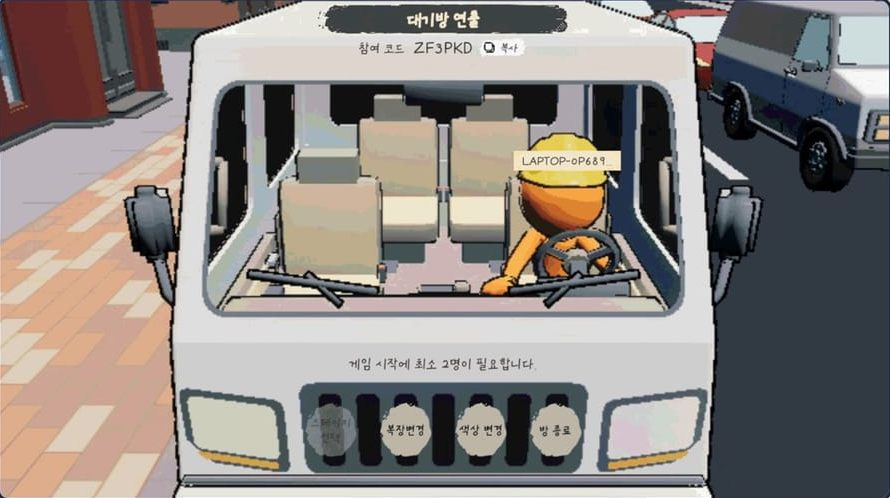
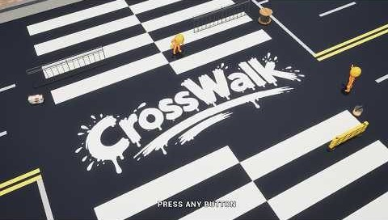
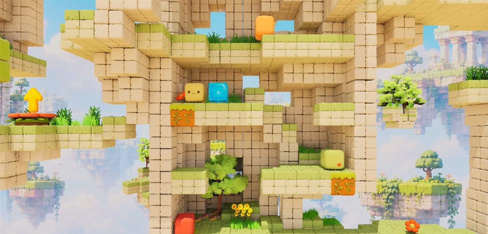

30→4초
방 목록 검색 대기
사라진 방 하나가 응답하지 않으면 목록 전체가 30초 동안 비던 문제를 5초 제한·취소·늦은 응답 폐기로 바꿨습니다.
CROSSWALK · CWGameInstanceGame Client Programmer · Unreal Engine 5
세션 실패도 복구로 설계하고,
서버 상태를 UI까지 잇습니다.
Steam 멀티플레이 협동 게임에서 세션 생성·검색·입장과 실패 복구, 서버 권위 흐름, MVVM 기반 HUD를 맡았습니다. 버그는 로그와 자동화 테스트로 재현하고, 원인이 된 구조를 고쳐서 닫습니다.
사라진 방 하나가 응답하지 않으면 목록 전체가 30초 동안 비던 문제를 5초 제한·취소·늦은 응답 폐기로 바꿨습니다.
CROSSWALK · CWGameInstance게이지·HUD·확인 팝업 로직을 C++ 부모 클래스로 모으고, 매 프레임 폴링하던 Tick 3종을 이벤트 갱신으로 바꿔 0개로 줄였습니다.
CROSSWALK · UCWUISubsystem새로고침·입장·취소·타임아웃 뒤 늦은 응답·반복 취소를 Unreal Automation Test로 등록해, 같은 버그가 돌아오면 바로 잡히게 했습니다.
CROSSWALK · Automation Test서로 다른 PC에서만 터지던 선택 이벤트 재귀를 로그에서 찾고, 서버 반영 중에만 켜지는 재진입 가드로 막았습니다.
CROSSWALK · WBP_StageSelect매 Tick 보내던 남은 시간을 0.1초 단위가 바뀔 때만 보내도록 바꿔 호출을 약 90% 줄였습니다.
SLIME PARTY · ASCameraBoundsVolumeGameState 구독·해제를 기반 클래스 하나로 모아, Pawn 교체 뒤 생기던 Accessed None 오류를 없앴습니다.
CROSSWALK · CWBaseGameStateViewModelSteam 1~4인 온라인 협동 파티 액션
차가 쉴 새 없이 달리는 도로 위에서 1~4명이 도구를 나눠 들고 횡단보도를 완성하는 게임입니다. 청소 → 테두리 → 채우기 → 정리 네 단계를 협업으로 해내고, 클리어 시간에 따라 별 등급을 받습니다. 저는 접속부터 게임 시작까지의 온라인 흐름과 그 상태를 보여주는 UI를 맡았습니다.


클라이언트는 입력만 보내고, 호스트가 상태와 시작 조건을 판정합니다. 판정된 상태는 복제되어 각 화면의 UI와 연출에만 쓰입니다. 그래서 접속 순서나 맵 이동과 관계없이 모두가 같은 값을 봅니다.
작업·도구 들기·보급·패링 요청만 서버로 보냅니다.
시작 조건·체온·피격 같은 규칙은 호스트에서만 결정합니다.
바뀐 상태만 각 클라이언트에 전달됩니다.
ViewModel이 FieldNotify로 위젯을 갱신합니다.
온라인 서비스를 두 개 유지하면 분기마다 버그가 생겼습니다. 세 가지 안을 비교해 Steam 단일화를 골랐고, 실제 다른 네트워크 환경에서 끊김 없이 플레이되는 것까지 확인했습니다.
두 경로의 분기에서 버그가 계속 생김
등록이 끝나기 전에는 쓸 수 없음
테스트 App ID 480으로 바로 검증 가능
다른 네트워크에서 4인 7분 21초 플레이

각 건은 문제 → 해결 → 결과 순서이고, 실제 커밋으로 바로 이동할 수 있습니다.
호스트가 나가거나 연결이 끊긴 참가자가 메뉴로 돌아오지 못했습니다. 게임 연결이 끊겨도 온라인 세션 등록은 남아 다음 방 생성·참가가 막혔고, 방 생성 중 서버 열기에 실패하면 들어갈 수 없는 유령 방이 목록에 남았습니다.
연결이 끊기면 진행 중인 작업을 취소하고, 남은 세션을 지운 뒤 메뉴로 보냅니다. 방 생성 실패 3가지 경로를 하나의 롤백 함수로 모았고, 삭제가 끝날 때까지 버튼을 잠갔습니다. 완료 신호가 오지 않아도 30초 뒤에는 메뉴로 돌아갑니다.
끊긴 참가자는 "호스트가 방을 나갔거나 연결이 끊어졌습니다" 안내와 함께 방 목록으로 돌아옵니다. 생성에 실패해도 유령 방이 남지 않고, 실패 알림은 롤백이 끝난 뒤 한 번만 표시됩니다.
BindDestroySessionCompleteDelegate();
// 동기 완료에 대비해 타이머를 요청보다 먼저 건다
StartNetworkFailureRecoveryTimeout();
if (!SessionInterface->DestroySession(
CrosswalkSession::GameSessionName))
{
// 즉시 실패면 완료 신호가 없으므로 바로 복귀
FinishNetworkFailureRecovery();
}방을 나온 직후 목록을 열면 30초 가까이 비어 있었고, 그동안 새로고침과 다른 버튼까지 잠겼습니다. Steam 검색은 찾은 방 전부의 응답을 기다려야 끝나서, 방금 없앤 방 하나가 응답하지 않으면 통째로 실패했습니다. 취소해도 늦게 온 결과가 새 목록을 덮어쓸 수 있었습니다.
검색에 5초 제한을 두고, 검색 중에도 다른 버튼을 쓸 수 있게 했습니다. 다른 버튼을 누르면 검색을 취소하고 취소한 검색의 늦은 응답은 버립니다. 새 검색은 이전 검색이 끝난 뒤 실행되고, Steam 응답 대기 기준도 30초에서 4초로 줄였습니다.
3인 테스트에서 막힌 검색이 4.02초에 끊기고 UI는 3.93초에 풀렸으며, 늦은 응답이 버려지는 것을 로그로 확인했습니다. 새로고침·입장·취소·타임아웃 뒤 늦은 응답·반복 취소를 자동화 테스트로 검증합니다.
// DiscardPendingSearch: 취소해도 완료 방송은 오므로
// 진행 중인 검색은 늦은 응답만 버리도록 표시
if (bAwaitingSearchCompletion)
{
bDiscardSearchResult = true;
}
else
{
ClearFindSessionsCompleteDelegate();
}스테이지를 시작(Seamless Travel)한 뒤 호스트 화면에서만 다른 참가자의 체온 게이지가 호스트 체온과 똑같이 움직였습니다. 이때 PlayerState 객체가 새로 바뀌는데, 참가자 정보 비교가 PlayerState를 보지 않아 MVVM이 "변경 없음"으로 판단했습니다. 게이지는 대상이 없으면 내 값을 대신 읽어 원인이 가려졌습니다.
비교 조건에 PlayerState를 추가해 객체 교체를 변경으로 감지하게 했습니다. 다른 참가자 게이지는 전달받은 PlayerState만 읽고, 대상이 없으면 내 값 대신 0을 표시해 오류가 바로 드러나게 했습니다.
호스트 화면에서도 참가자별 체온이 각자 값으로 표시됩니다. 참가자 화면에서는 왜 재현되지 않았는지(위젯이 교체 이후 생성됨)까지 정리해, "대상이 없을 때 조용히 다른 값으로 대신하지 않는다"는 원칙을 이후 UI에도 적용했습니다.
// MVVM 배열 변경 검사에서 표시 정보와 참조 대상 비교
// Seamless Travel로 PlayerState가 교체되는 경우를 잡음
bool operator==(const FCWRoomPlayerInfo& Other) const
{
return PlayerId == Other.PlayerId &&
PlayerName.EqualTo(Other.PlayerName) &&
bIsReady == Other.bIsReady &&
bIsLocalPlayer == Other.bIsLocalPlayer &&
PlayerState == Other.PlayerState;
}같은 PC 2인 테스트는 정상이었는데, 서로 다른 PC 4인 테스트에서 스테이지 선택창을 열면 일부 클라이언트가 종료되었습니다. 호스트에는 "시작 조건 불충족" 경고만 보였지만, 클라이언트 로그에서 선택 이벤트의 무한 재귀(120회)를 찾았습니다.
서버 선택을 목록에 반영하는 동안만 켜지는 재진입 가드를 두어, 그 사이 발생한 선택 이벤트는 바로 종료되게 했습니다. 모든 종료 경로에서 가드를 해제하고, 이미 선택된 스테이지는 서버에 다시 요청하지 않게 했습니다.
재귀·연결 실패 경고가 사라지고 선택한 스테이지로 정상 이동했습니다. 호스트 경고는 원인이 아니라 결과였고, 인원 수가 아니라 PC 간 타이밍 차이가 조건이었다는 점을 정리했습니다.
// 서버 선택을 목록에 반영 (HandleSelectionChanged)
bIsApplyingSelection = true;
ListView.SetSelectedIndex(ServerIndex);
// → OnItemSelectionChanged 가 다시 발생
bIsApplyingSelection = false;
// 선택 변경 이벤트 (OnItemSelectionChanged)
if (bIsApplyingSelection) return;
if (Entry.StageId != SelectedStageId)
RequestSelectStage(Entry.StageId);HUD 게이지·확인 팝업·방 나가기 로직이 여러 위젯 블루프린트에 복제돼 있어, 수정할 때마다 6곳을 일일이 바꿔야 했습니다. 또 Tick 폴링으로 매 프레임 GetAllWidgetsOfClass를 호출하고 있었습니다.
공통 부모 클래스를 도입해 상태 머신·타이머·입력 잠금을 한곳에서 관리하고, 표시 계산은 순수 규칙(FCWToolPaintDisplayBuilder)으로 분리했습니다. Tick 폴링은 OnPaintChanged 이벤트 갱신으로 바꾸고, 같은 프레임의 변화는 다음 틱에 한 번만 반영합니다.
동일 로직 복제 6곳이 1곳으로, 매 프레임 폴링 Tick 3종이 0으로 줄었습니다. 방 나가기·확인 팝업은 UI 서브시스템 API로 통합하면서 함수 시그니처를 유지해 기존 BP 호출은 그대로 동작합니다.
UCWBaseToolPaintGaugeUCWBaseInGameHUDUCWBaseConfirmDialogUCWUISubsystemFCWToolPaintDisplayBuilderGameState를 구독하는 ViewModel마다 구독 등록·해제·수명 관리 코드가 중복되었고, Pawn이 교체된 뒤 이전 컴포넌트를 참조해 Accessed None 오류가 났습니다.
구독·최초 갱신·해제를 기반 클래스 한 곳에서 처리하고, Pawn 교체 시 이전 컴포넌트 참조를 분기 처리했습니다. 플레이어·목표·방 ViewModel을 기반 클래스 상속으로 바꿔, 리슨 서버에서 호스트와 클라이언트가 같은 기반을 씁니다.
ViewModel별로 따로 있던 생명주기 코드 4개가 기반 클래스 1개로 합쳐졌고, Pawn 교체 시 Accessed None 오류가 0건이 되었습니다.
CWBaseGameStateViewModelCWInGamePlayerViewModelCWObjectiveViewModelCWRoomViewModel비동기 세션 기능은 성공 콜백뿐 아니라 타임아웃과 늦은 응답까지 포함한 상태 전이로 설계해야 합니다.
서버 권위 공통 흐름은 베이스 GameMode에 두고, 화면별 시작 조건은 파생 GameMode로 분리해야 합니다.
UI 상태는 객체 식별자뿐 아니라 수명주기에서 교체되는 참조까지 변경 감지 조건에 포함해야 합니다.
설정 저장은 미확정 상태와 확정 상태의 순서를 분리해야 정합성을 지킬 수 있습니다.
EOS 4인 협동 멀티플레이 퍼즐 플랫포머
동료와 협력해 퍼즐을 풀고 전원이 출구에 도달하는 4인 협동 게임입니다. 저는 EOS 로그인부터 방 생성·검색·입장, 대기방, 게임 시작, 인게임 경고까지 이어지는 온라인 흐름과 UI를 맡았습니다.

시작 조건은 GameMode의 CanStartGame 한곳에서 검증하고, 타이틀부터 방 입장까지의 화면 전환은 UIManager가 맡도록 책임을 나눴습니다.
시작 전 호스트 권한·인원·준비·색상 중복을 CanStartGame에서 함께 검증
기존 위젯 제거 → 새 위젯 표시를 한 흐름으로, 세션 델리게이트로 목록 갱신
EOS 인증과 방 생성·검색·입장·파기, 비밀번호 검증 단계
열쇠 획득과 문 개방 퍼즐 오브젝트
카메라 밖 플레이어의 남은 시간을 전 클라이언트에 전달
이동·파괴·슬라임 등 상호작용 블록
방장이 나가면 참가자도 로비로 돌아가야 했습니다. 방장이 즉시 방을 지우면 다른 클라이언트가 세션을 정리할 시간이 부족했습니다.
각 PlayerController에 Client RPC로 정리를 요청하고, 1.5초 뒤 DestroyRoom을 호출해 완료 이벤트에서 로비로 이동합니다.
참가자가 먼저 세션을 정리한 뒤 로비로 복귀합니다.
// 접속 중인 플레이어들 세션 정리
for (FConstPlayerControllerIterator It =
World->GetPlayerControllerIterator(); It; ++It)
{
// ... 방장 자신은 건너뜀
// 플레이어가 자기 세션을 정리 후 로비맵으로 이동
UIController->ClientLeaveRoomByHost();
}
// 플레이어들이 먼저 세션을 정리할 시간을 준 뒤 방장 세션 제거
World->GetTimerManager().SetTimer(LeaveRoomTimerHandle,
[this]()
{
// ... SessionSubsystem 확인
SessionSubsystem->DestroyRoom();
},
1.5f, false);화면 밖으로 나간 플레이어는 5초 뒤 사망하는데, 카운트다운이 서버의 볼륨에만 있어 경고 UI가 모든 클라이언트에 일관되게 보이지 않았습니다.
여러 플레이어 중 가장 짧은 남은 시간을 0.1초 단위로 올림해 Client RPC로 각 로컬 UIManager에 전달합니다. 같은 값은 다시 보내지 않습니다.
모든 화면에 같은 카운트다운이 표시되고, 매 Tick 전송 대비 RPC 호출이 약 90% 줄었습니다.
// 5초에서 경과 시간을 빼서 남은 시간 계산
const float RemainingTime =
FMath::Max(KillDelay - OutElapsed, 0.f);
// 5.0, 4.9, 4.8 형식으로 올림
const float RoundedRemainingTime =
FMath::CeilToFloat(RemainingTime * 10.f) / 10.f;
// 여러 플레이어 중 가장 적게 남은 시간 선택
if (ShortestRemainingTime < 0.f ||
RoundedRemainingTime < ShortestRemainingTime)
{
ShortestRemainingTime = RoundedRemainingTime;
}
// 같은 0.1초 값은 다시 보내지 않음
if (FMath::IsNearlyEqual(LastBroadcastRemainingTime,
RemainingTime)) return;세션 생성·검색 흐름에 비밀번호 검증 단계가 없어 아무나 방에 들어올 수 있었습니다.
세션 서브시스템의 생성·검색·입장·파기 로직에 비밀번호 설정과 입장 검증을 넣고, 방 만들기·목록·대기방 위젯과 연동했습니다. 방 나가기 결과는 델리게이트로 UI에 비동기 전달해 세션과 UI 결합도를 낮췄습니다.
비공개 방 무단 입장 차단율이 0%에서 100%가 되었습니다.
비공개 방 차단율
로그인 → 로비 → 방 생성 → 방 찾기 → 방 입장
멀티플레이 세션을 종료할 때는 참가자별 정리 완료와 방 삭제 순서를 분리해야 합니다.
여러 플레이어의 시작 조건은 서버에서 한곳에 모아 검증해야 합니다.
화면 전환은 기존 위젯 제거와 새 위젯 표시의 책임을 한 흐름으로 관리해야 합니다.
클라이언트 UI는 서버 상태가 바뀌기 전에 필요한 안내를 먼저 표시해야 합니다.
확률 전투 · 데이터 기반 설계
몬스터마다 클래스를 새로 만들던 상속 구조를 데이터 기반 단일 클래스로 바꿨습니다. 이름·HP·ATK·스킬 확률을 데이터로 분리하고 MonsterFactory로 생성 로직을 나눠, 클래스를 추가하지 않고 데이터 한 줄로 몬스터를 늘릴 수 있게 했습니다. rand() 확률 분기의 경계 조건 오류로 스킬만 나가던 버그도 고쳤습니다.
BasicMonsterMonsterFactorystd::unique_ptrWindows Console API신규 몬스터 추가 비용: 클래스 4개 신설 → 데이터 1건
밸런싱 시뮬레이션 클리어율
팀스파르타 내일배움캠프 Unreal 개발자 과정 · 1,620시간, 챕터별 팀 프로젝트 4회
Claude Academy(Anthropic) 20개 코스 · Databricks Generative AI Fundamentals
웹개발·Node.js 풀스택 과정 · 376시간
Contact
세션 실패도 복구로 설계하고, 서버 상태를 UI까지 잇는 클라이언트 개발자 김현준입니다. 읽어 주셔서 감사합니다.